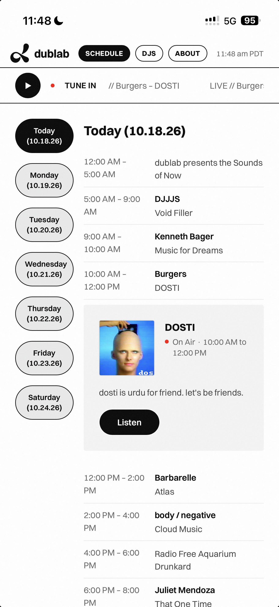
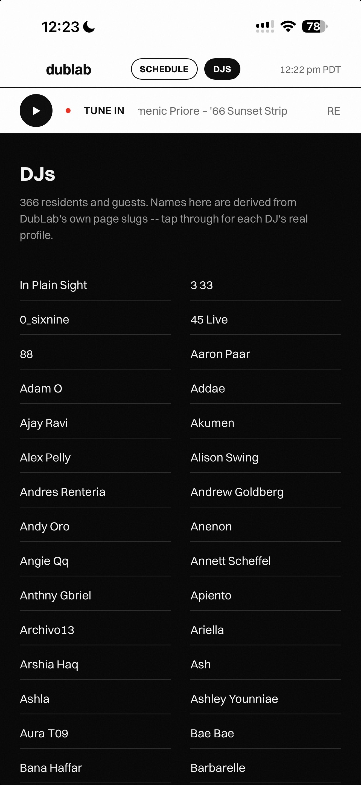
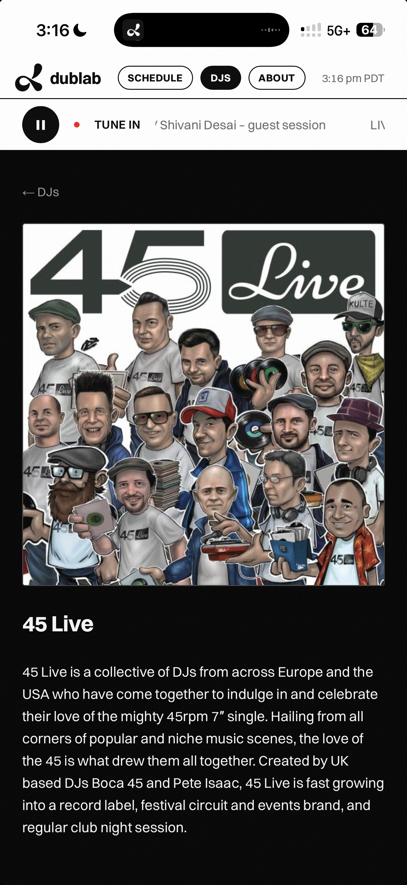
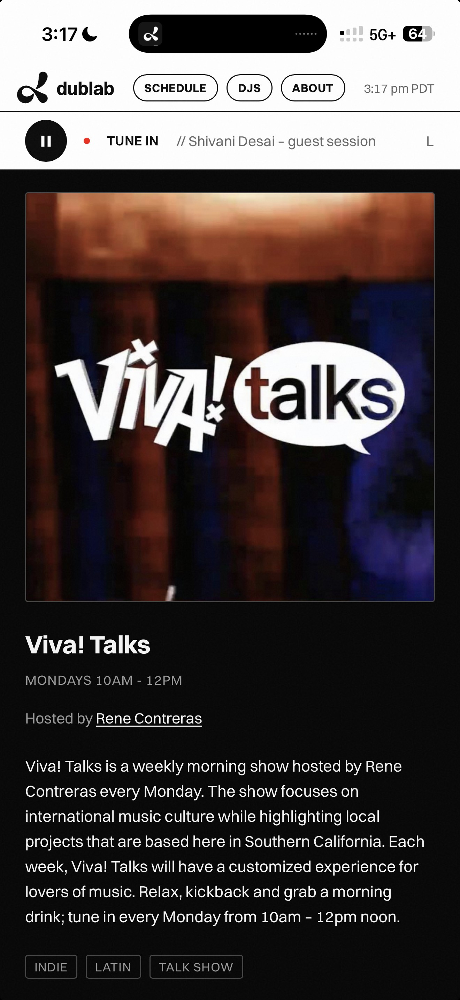
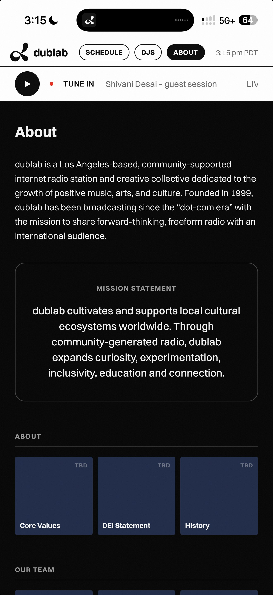
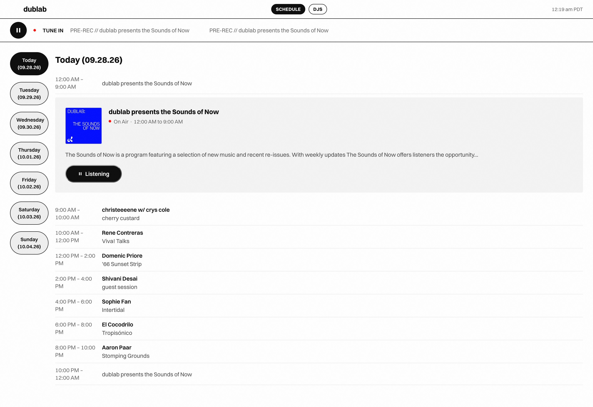

dublab mobile
A native-feeling PWA for dublab, LA's independent, community-supported radio station — built from an acquaintance's recurring complaint that after years of people saying someone should build this, as far as he knew, no one currently had.

On a real phone — the actual point of this whole build.
- Problem
- Longtime listeners had been saying dublab needed a proper app, and as far as anyone in that conversation knew, nobody had built one.
- Opportunity
- Start small with an installable web app, live audio and the schedule only, real enough to send to dublab for honest feedback, then grow it once the core felt solid.
- Result
- Live and installable, with 5 real features and 366 real DJ profiles, used for a full day on a real home screen and sent to a contact at dublab for feedback.
An acquaintance who's followed dublab for years said, again, that nobody had built it an app.
One had existed years earlier, before his time; I built this without knowing that.
I started with just Tune In and Schedule; DJ and show pages came later.
dublab runs two feeds; its own site's source revealed the real one, Airtime Pro audio.
A Next.js route proxies the schedule and DJ data, which lack CORS headers.
Two schedule views became one schedule, not two, opening on today's current slot.




On real iPhones, jumping between distant days made the schedule flicker.
Four theories failed; then real Friday copy flashed mid-scroll, exposing a WebKit tile-cache bug.
The fix was architectural: show one day at a time, so there's no long scroll.
Shipped: live audio with auto-reconnect, one schedule, 366 real DJs, DJ and show pages, home-screen install.
Fixed live: the flicker, a status-bar bleed, a vanishing header, and a squashed live dot.
Cut on purpose: an offline mode it couldn't honestly keep, push notifications, accounts, and user content.

Everything shipped, in one view — schedule, on-air card, and the Listen/pause toggle at its final sized-to-content width.
Frame-by-frame pixel diffs caught a black flash an early visual scan had missed.
The most useful test was listening all day, in the car, on a real phone.
Drop-outs left the player silent until you hit play, so I built auto-reconnect.
Live, installable, and used for a full day on a real home screen.
Sent to a contact at dublab for honest feedback, the test it was built for.
Try it live — best experienced on a phone, added to your home screen.
- Next.js
- PWA
- Live Product